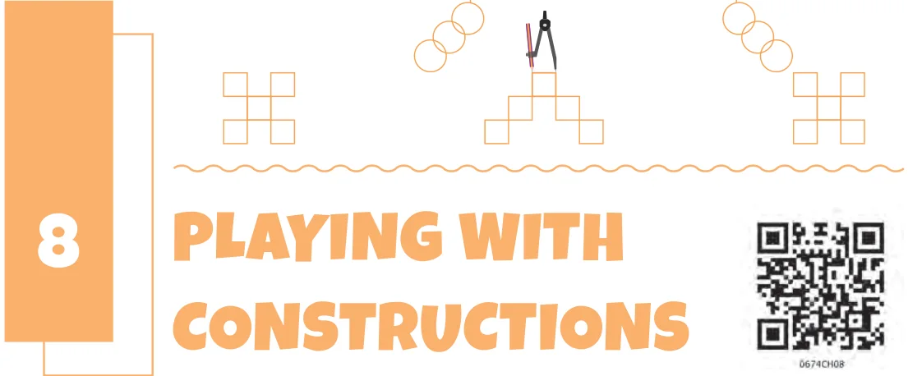
Observe the following figures and try drawing them freehand.
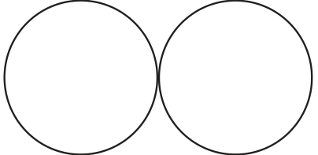
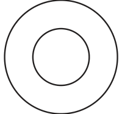
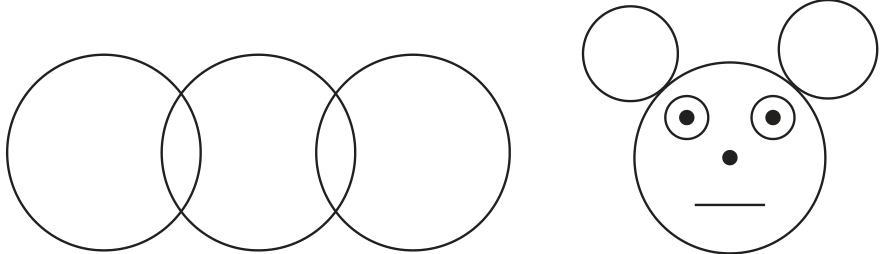
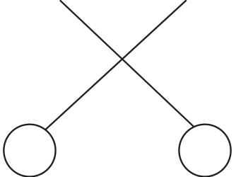
Now, arm yourself with a ruler and a compass. Let us explore if we can draw these figures with these tools and get familiar with a compass. Observe the way a compass is made. What can one draw with the compass? Explore! Do you know what curves are? They are any shapes that can be drawn on paper with a pencil, and include straight lines, circles and other figures as shown below:
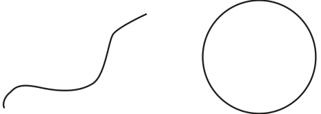
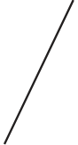
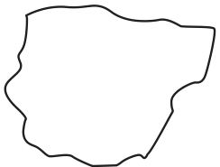
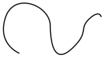
Mark a point ‘P’ in your notebook. Then, mark as many points as possible, in different directions, that are 4 cm away from P. Think: Imagine marking all the points of 4 cm distance from the point P. How would they look? Try to draw it and verify if it is correct by taking some points on the curve and checking if their distances from P are indeed 4 cm. Explore, if you have not already done so, and see if a compass can be used for this purpose. You can start by marking a few points of distance 4 cm from P using the compass. How can this be done?
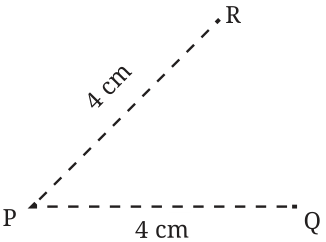
You will have to open up the compass against a ruler (see Fig. 8.2) such that the distance between the tip of the compass and the pencil is 4 cm. Now, try to get the full curve.
Hint: Keep the point of the compass fixed moving only the pencil. What is the shape of the curve? It is a circle! Take a point on the circle. What will be its distance from \(P -\) equal to 4 cm, less than 4 cm or greater than 4 cm? Similarly, what will be the distance between P and another point on the circle? As shown in the figure, the point P is called the centre of the circle and the distance between the centre and any point on the circle is called the radius of the circle.
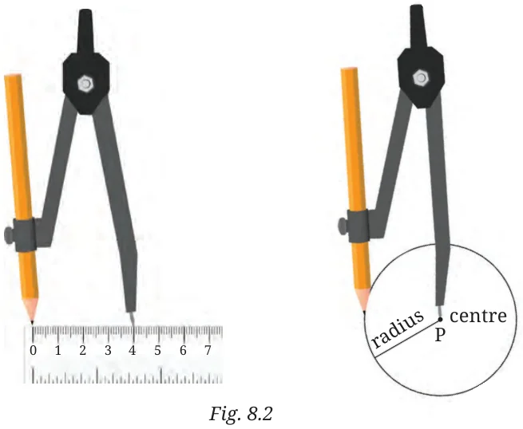
Having explored the use of a compass, go ahead and recreate the images in Fig. 8.1. Can you make the figures look as good as the figures shown there? Try again if you want to! Also, has the use of instruments made the construction easier? Now try constructing the following figures.
Construct
- A Person How will you draw this?
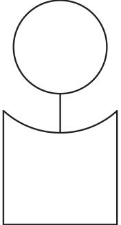
This figure has two components.
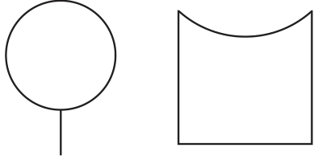
You might have figured out a way of drawing the first part. For drawing the second part, see this.
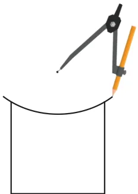
The challenge here is to find out where to place the tip of the compass and the radius to be taken for drawing this curve. You can fix a radius in the compass and try placing the tip of the
compass in different locations to see which point works for getting the curve. Use your estimate where to keep the tip.
- Wavy Wave Construct this.
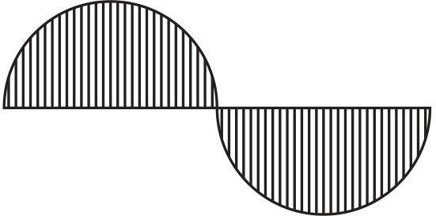
As the length of the central line is not specified, we can take it to be of any length. Let us take AB to be the central line such that the length of AB is 8 cm. We write this as \(AB = 8\) cm. Here, the first wave is drawn as a half circle.
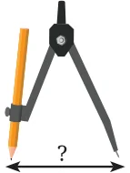
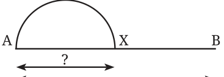